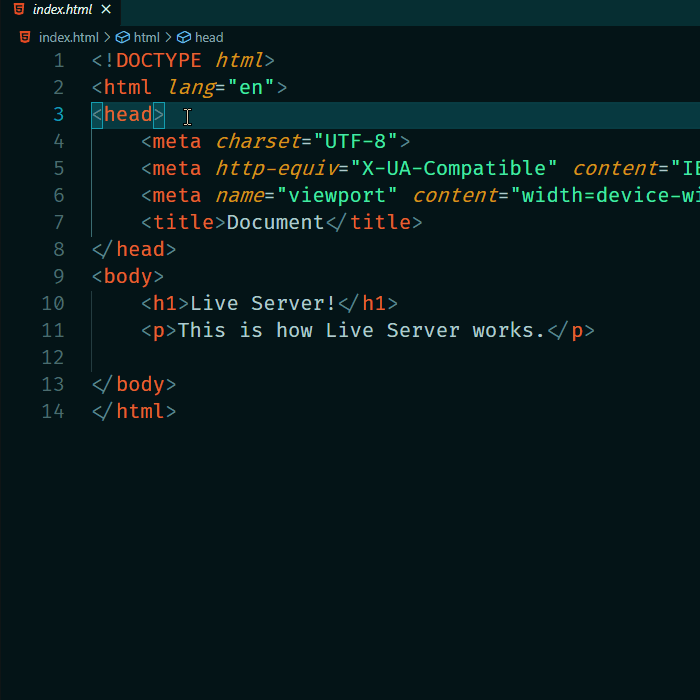
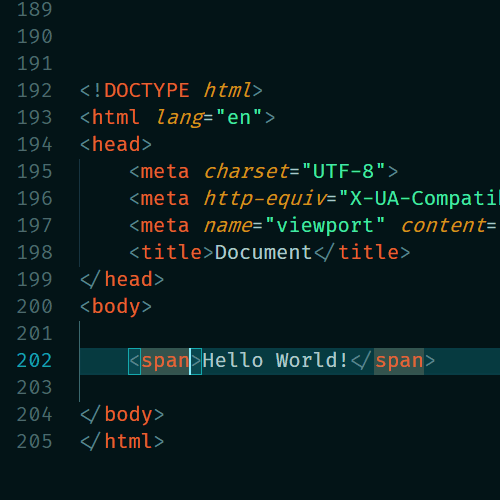
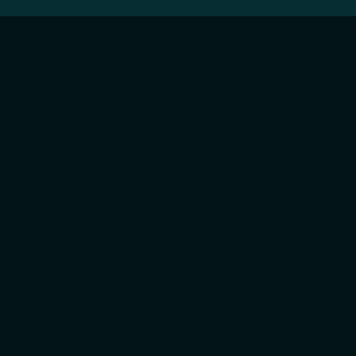

Welcome,
My name is Caedan
This is my webpage for Mission 1. It's built with HTML, CSS, and a little JavaScript. Here you'll see what I'm working on currently and what I hope to work on in the future. I've also included some—hopefully—useful tips, tricks, and resources; I use them all myself very regularly.
Scroll to continue...
Things I'm working on
HTML
- Basics
- Best practicies for tags
- Linking to css and other resources
CSS
- Specificity (try say that 10 times)
- Units, and best practices (e.g. "rem" for fonts, "em" for padding/margin)
- Flexbox
- Selectors and selector logic
- Variables
- Media Queries
- SASS and Parcel (node)
JavaScript
- Event listeners
- Querying the page for elements, classes, and IDs
- Adding, removing styles
- Constructing repeating sections of the page
VS Code
Useful extensions, tricks, and keyboard shortcuts
Extensions
Extensions are a great way to add new functionality to VS Code. They can be installed by browsing the Extension Marketplace found on the left-hand side of the VS Code window.
Live Server
Launches a local development server with live reload feature for static & dynamic pages. In other words, when you, for example, save an html file in VS Code, the page in your browser will automatically reload.
Auto rename tag
When an opening or closing tag is renamed, 'Auto Rename Tag' will automatically rename it's pair.
File Utils
File Utils bring extra file manipulation functions over what VS Code offers natively. A convenient way of creating, duplicating, moving, renaming, deleting files and directories.
Tricks
Command pallet
Using the keyboard shortcut 'Ctrl/Cmd + shift + p', the command pallet is summoned. It allows you to triger most VS Code functions simply by typing.
Emmet
Simply put, Emmet expands abbreviations, or keywords, into code. In HTML, for example, simply typing 'p' and hitting enter will trigger Emmet and expand the 'p' into '<p></p>'.
Emmet can do some other cool things. For instance, typing 'div.className' will expand into '<div class="className"></div>'.
Futhermore, by simply typing '.className', Emmet will infer that you want a div tag with that class and give you the same thing.
Keyboard shortcuts
Keyboard shortcuts are an essential part of any piece of software for anyone who considers themselves a 'power user'. Here are two super-useful shortcuts in VS Code:
Comment
Ctrl/Cmd + /
This will turn either the current line, or a selection of multiple lines into a comment block. This is useful for quickly 'disabling part of your code.
Move line
Alt + up/down
This will move the currently selected line, or a selection of multiple lines up or down. Other lines will move to before/after the line(s) you moved. This is a better alternative to copying, making space, pasting, then removing leftover whitespace.
Useful resources
Other useful resources and tools from around the web
caniuse.com
CanIUse is an extremely useful tool for quickly visualizing which frontend technologies are compatible with which browsers.
At a glance, you can see which major browser support the technology in question, notes, resources, known issues, and more. Browser support for features are always kept up to date and in some cases, even show which future browser version is set to support said feature.
[source: KeyCDN]
codepen.io
At its heart, it allows you to write code in the browser, and see the results of it as you build. A useful and liberating online code editor for developers of any skill, and particularly empowering for people learning to code. We focus primarily on front-end languages like HTML, CSS, JavaScript, and preprocessing syntaxes that turn into those things.
[source: CodePen]
Future goals
What I plan to work on next
Next
- React
- Databases
This year
- Web apps
- Electron (maybe)
- Create tools using Notion API
Someday
- macOS apps (Swift)
- Raspberry Pi
- keep watching...